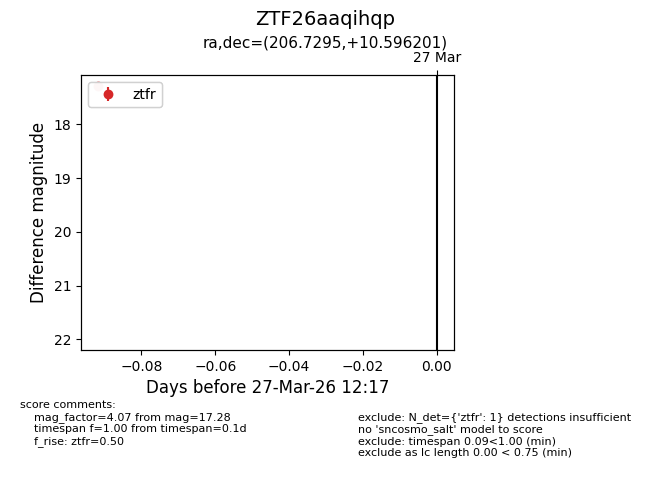
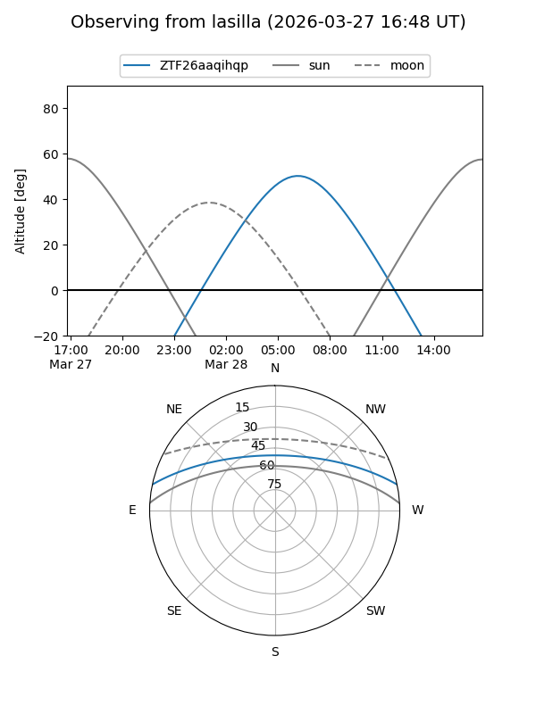
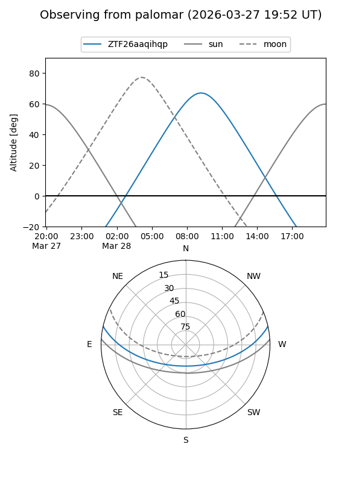

ZTF26aaqihqp
Target ZTF26aaqihqp at 2026-03-27 12:21
Aliases and brokers:
FINK: link
Lasair: link
ALeRCE: link
alt names
ZTF26aaqihqp (ztf,fink_ztf)
Coordinates:
equatorial (ra, dec) = 206.7295,+10.59620
equatorial (HMS+DMS) = 13:46:55.08,+10:35:46.33
galactic (l, b) = (343.8881,+68.93178)
Flags:
Photometry:
last ztfr=17.28
1 ztfr detections
Lightcurve

Visibility


Additional plots